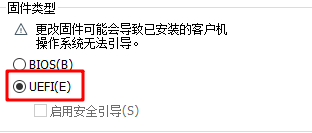
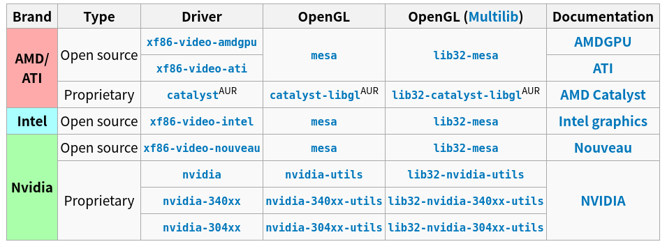
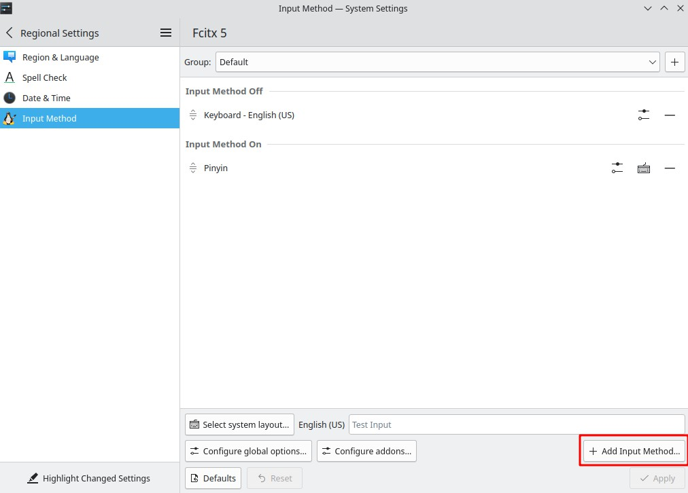
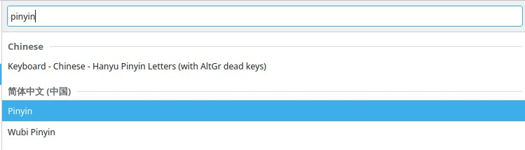
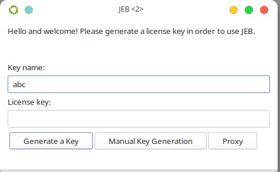
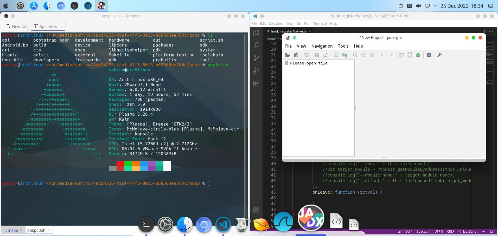

Archlinux虚拟机搭建Android逆向环境
r0env 作为 android 逆向环境已经相当完美了，之所以还要折腾 Archlinux 搭建新环境只是觉得 kali 上自带的各种渗透工具都是我不需要的，而我这种洁癖无法忍受这一点，于是找到这个最干净（可能）的 linux 系统，从零开始搭建，同时整理出这篇备忘文章。
前期配置
首先从官网下载镜像，找到 China 那块随便找一个仓库下就行：iso下载地址
创建虚拟机没什么好说的，操作系统版本选择”其他Linux”，硬盘大小给的 70G ，网络适配器选择 NAT（桥接也行，需要配置一下静态 ip ），然后创建完成后进入虚拟机设置->选项->高级->固件类型选择UEFI

系统安装
开始安装系统，进入到 shell 界面后发现无法复制粘贴指令，使用宿主机的 cmder 自带的 ssh 连进虚拟机，先敲 passwd root 修改 root 的密码，然后敲 ip addr 命令查看自动分配的 ip ，最后再在 cmder 敲 ssh root@<your-ip>
分区
创建分区的过程参考：2021年vmware安装archlinux
我自己创建了三个分区，第一个是 EFI ，第二个是 swap ，最后一个分区就是给根目录/
1 | Device Start End Sectors Size Type |
格式化分区
1 | mkfs.fat -F 32 /dev/sda1 # 格式化EFI系统分区 |
挂载分区
1 | mount /dev/sda3 /mnt # 先挂载根目录 |
安装必要软件包
修改 /etc/pacman.d/mirrorlist ，添加下面两项到顶部
1 | Server = https://mirrors.ustc.edu.cn/archlinux/$repo/os/$arch |
安装真实系统所需的软件
1 | pacstrap /mnt base linux linux-firmware vim sudo dhcpcd bash-completion |
生成fstab
1 | genfstab -U /mnt >> /mnt/etc/fstab |
安装引导程序
1 | arch-chroot /mnt # 进入安装的新系统 |
本地化
1 | ln -sf /usr/share/zoneinfo/Asia/Shanghai /etc/localtime # 修改时区 |
重启
1 | passwd root # 先设置密码 |
配置网络
重启后就进入到真实的系统中了，首先需要为其配置网络
1 | systemctl enable dhcpcd #设置开机启动 |
设置源
修改 /etc/pacman.d/mirrorlist ，添加下面两项到顶部
1 | Server = https://mirrors.ustc.edu.cn/archlinux/$repo/os/$arch |
安装openssh
1 | pacman -S openssh |
到这一步，一个纯净的不带界面的系统已经安装完成了，可以打个快照
图形界面安装
安装显卡驱动，需要先查表

以 intel 为例：pacman -S xf86-video-intel
添加新用户，欢迎界面的可选用户不能是 root
1 | useradd -m <user-name> |
将用户添加到 sudo 文件：vim /etc/sudoers
在 root ALL=(ALL) ALL 下面一行添加 <user-name> ALL=(ALL) ALL
开启 multilib 支持，到 /etc/pacman.conf ，取消下面两句的注释
1 | [multilib] |
继续在 /etc/pacman.conf 末尾添加 Arch Linux 中文社区仓库
1 | [archlinuxcn] |
安装 KDE Plasma 桌面环境
1 | pacman -Syyu # 更新一下仓库 |
自适应窗口
一般来说在虚拟机里面安装 VMware tools 就能解决窗口自适应的问题，但 Archlinux 好像对 VMware tools 的支持不太好，最后我是参考这篇文章解决的：VMWare 自动适配 Archlinux 分辨率
拖拽与复制粘贴
虚拟机与宿主机之间的复制粘贴
1 | sudo pacman -S open-vm-tools |
中文输入法
1 | sudo systemctl enable --now NetworkManager # 先把桌面环境下的网络管理器跑起 |
编辑 /etc/environment ，添加下面的内容
1 | INPUT_METHOD=fcitx5 |
接着添加中文输入法 settings > Regional Settings > Input Method


之后按 ctrl + space 切换中文输入法
安装paru（AUR助手）
1 | sudo pacman -Syu |
安装常用工具
1 | sudo pacman -S base-devel # 基础命令（which、find和grep） |
zsh 安装和配置
安装zsh：archlinux 简明指南
安装 zsh 后按键 Home 和 End 失效：解决办法
修改 zsh prompt 格式，添加下面内容到 ~/.zshrc
1 | autoload -U colors && colors |
逆向环境安装
安装jadx
1 | paru -S jadx-bin |
010editor
这样安装的只是30天试用版，也可以用52盘的破解版paru -S 010editor
python环境
安装 pyenv 以及 python2 和 python3
1 | $ sudo pacman -S pyenv |
配置 pyenv shell 环境pyenv init
init 后会提示在 ~/.bashrc 或 ~/.zshrc 写入下面内容
1 | PYENV_ROOT="$HOME/.pyenv" |
重启 shell 环境source ~/.zshrc
切换到拥有 python3.8.5 的环境，这个环境同时拥有 pip3pyenv shell 3.8.5
charles
使用 paru -S charles 安装报错：
1 | Error: A JNI error has occurred, please check your installation and try again |
查看所有 jdk 版本：archlinux-java status
我的显示如下：
1 | Available Java environments: |
切换 jdk 版本，不使用 java-8-openjdk ：sudo archlinux-java set java-19-openjdk
如果没有就安装一个：sudo pacman -S jre-openjdk
最后再用 paru 重新安装 charles
nodejs
安装 nvm ，用于 nodejs 版本管理
1 | paru -S nvm |
frida
假设前面正确配置 pyenv 环境
1 | pyenv local 3.8.5 |
frida 项目开发环境
1 | git clone git://github.com/oleavr/frida-agent-example.git |
android studio
使用 AUR 下载的是最新版，我想找个老版本的
访问↓网址选择一个版本然后 wget 即可
https://developer.android.com/studio/archive
添加别名，之后用 as 命令就能启动
1 | /etc/profile |
最后 source 一下source /etc/profile
jeb
找了半天不是跑不了，就是 license 过期，最后找到这个可以用的：jeb下载地址
解压后执行 jeb_linux ，显示下图窗口，点击 Generate a Key ，然后点击 Continue 即可

其它
建立 ll 命令，在 /etc/profile 添加
1 | alias ll='ls -al' |
安装 scrcpysudo pacman -S scrcpy
修改全局字体大小，全改成 12pxSetting -> Appearance -> Fonts
结束
这一套搭建下来太麻烦了，不过成品效果还不错

ida 和 hyperpwn 有点难搞，就不装上去了，暂时先用着这些，以后有什么问题再说。。。累死